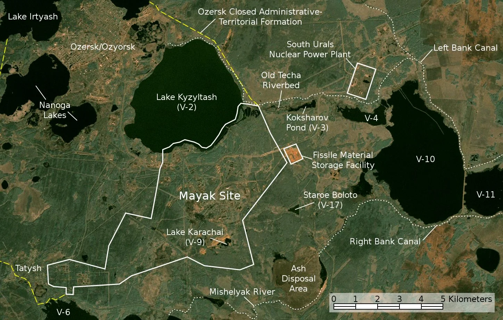
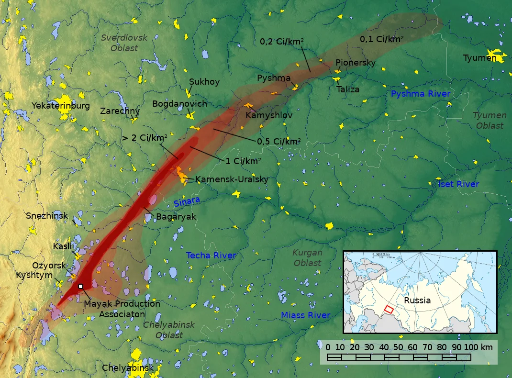
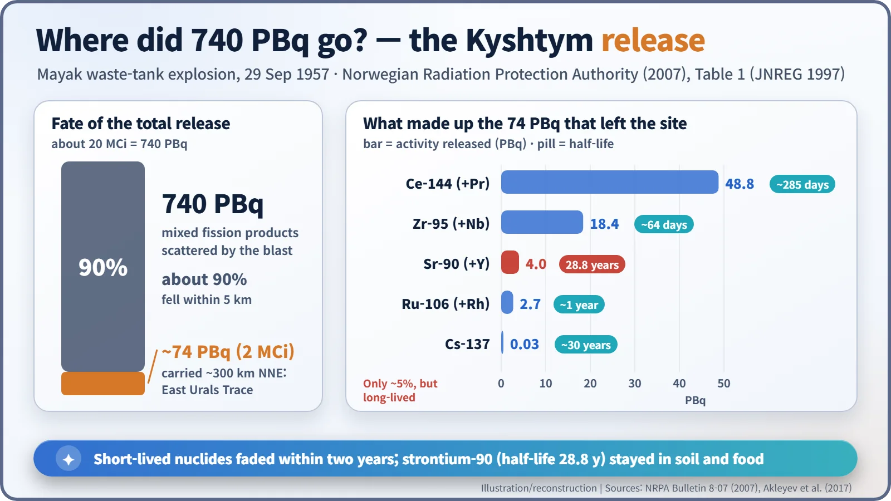
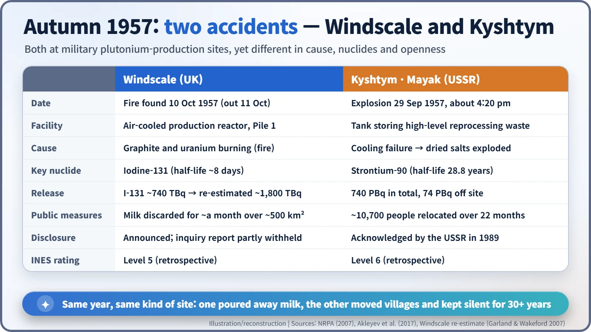

Nuclear History · 185
The Explosion in a City That Wasn't on the Map — Kyshtym, the Mayak Accident Hidden for Over 30 Years (1957)
Not a nuclear blast but a chemical one: dried radioactive salts exploded, more than 10,000 people were relocated, and the world learned of it only decades later.
On 29 September 1957 a cooling failure caused a high-level waste tank at the secret Mayak plutonium plant in the Soviet Urals to explode. About 740 PBq of radioactivity was released, and 74 PBq of it formed a 300-kilometre trace that forced more than 10,000 people from their villages. The Soviet Union acknowledged the accident only in 1989.
Named after a town where it did not happen
Accidents are usually named after the place where they happen. The Kyshtym accident is the exception. The explosion did not take place in the small town of Kyshtym at all. It happened nearby, at the Mayak Production Association in a closed city called Chelyabinsk-40 (today Ozyorsk), a place that appeared on no public map. When the West finally learned of the disaster, Kyshtym was simply the nearest town with a name anyone could print. Even the label is a trace of secrecy. [1]
The back yard of a plutonium factory in a hurry
Mayak was a military site. From 1948 it produced plutonium for Soviet nuclear weapons. Separating plutonium from irradiated fuel leaves behind intensely radioactive liquid, known as high-level waste. In the early and mid-1950s Mayak stored this liquid in underground steel-and-concrete tanks, cooled with water, for about a year. Cooling was not optional: radioactive material keeps producing heat on its own. [1]
Mayak also had a separate, long-running pollution problem. Between 1949 and 1956 waste was discharged into the Techa River. That chronic contamination is a different story from the single event of 1957 described here.

Sunday, 29 September 1957, about 4:20 pm
On that Sunday the cooling system of tank No. 14 failed. The tank held 70–80 tonnes of waste, mostly nitrate compounds. As the cooling water boiled off, dried salts were left behind and heated to roughly 330–350 °C. At about 4:20 pm local time they exploded. [2]
This was not a nuclear explosion. No chain reaction took place: hot, dry chemicals blew up. The tank's concrete cover, often said to weigh about 160 tonnes, was thrown off. Estimates of the blast's TNT equivalent vary widely between sources, so no single figure is given here. [4]
The real problem was what the tank contained. According to the Norwegian Radiation Protection Authority (2007) and a 2017 review by Russian researchers (Akleyev and colleagues), about 20 million curies (740 PBq) were dispersed. Roughly 90% fell within 5 km of the tank. The remaining 74 PBq rose in a cloud about 1 km high and drifted north-north-east. Not every source agrees: the German research centre GSF (2007) put the total nearer 400 PBq. [1] [2] [3]
A 300-kilometre tongue, and strontium-90
The fallout laid down a strip about 300 km long and 30–50 km wide, now called the East Urals Radioactive Trace (EURT). Some 15,000–20,000 km² received more than 3.7 kBq of strontium-90 per square metre. The core zone above the evacuation threshold of 74 kBq/m² covered about 1,000 km². [1]

Most of the activity that left the site came from short-lived nuclides such as cerium-144 and zirconium-95. Strontium-90 was only about 5% of it. After about two years that had changed. The short-lived nuclides had largely decayed away, and strontium-90, with a half-life of 28.8 years, was what remained. In the body strontium behaves like calcium and builds up in bone. At first the main route into people was bread baked from contaminated grain; later it was milk and water from small village reservoirs. [1]

Moving villages, turning the soil
People were moved in stages. About 1,100 residents of three villages nearest the blast left within 7–14 days. Another 2,280 left at around 250 days, and a further 8,300 between 330 and 670 days. The Norwegian authority counts about 10,700 people relocated over 22 months; other sources give between 10,000 and about 13,000. Most of the abandoned villages were demolished. [1] [2] [3]
The land was treated too. Between 1957 and 1959 more than 10,000 tonnes of farm produce were destroyed. Over 6,000 hectares were deep-ploughed so that the contaminated topsoil ended up more than 50 cm down, below the reach of most crop roots. The head of the trace became a nature reserve, and in 2007 about 180 km² were still officially off-limits. [1]
What about health? The 2017 review followed a cohort of 21,427 residents. It found no cases of acute radiation syndrome and estimated that about 26 deaths from solid cancers could be attributed to radiation. Figures such as "hundreds dead" that circulate online have no clear source. [2]
Silence, and an exile's jigsaw puzzle
None of this was made public. The first crack came on 4 November 1976, when Zhores Medvedev (1925–2018), a biologist who had been stripped of Soviet citizenship and was living in London, mentioned a nuclear disaster in the Urals in the British magazine New Scientist. In a 1979 book, Nuclear Disaster in the Urals, he pieced the location together from clues in Soviet radioecology papers, such as studies of fish and wild animals. The historian Thomas Rabl (2012) argues that the CIA had a clear picture by around 1960 but did not make it public. [4] [5]
The Soviet Union officially acknowledged the accident only in June 1989. On the International Nuclear and Radiological Event Scale (INES) it is now rated, retrospectively, at Level 6. Less than two weeks after Kyshtym, in October 1957, Britain had its own accident: a fire in a production reactor at Windscale. Set side by side, the differences are striking. [3]

Two lessons
Technically, high-level waste is not a dead fire: it keeps producing heat and must be cooled. Politically, secrecy delays both the protection of local people and the sharing of lessons with the rest of the world.